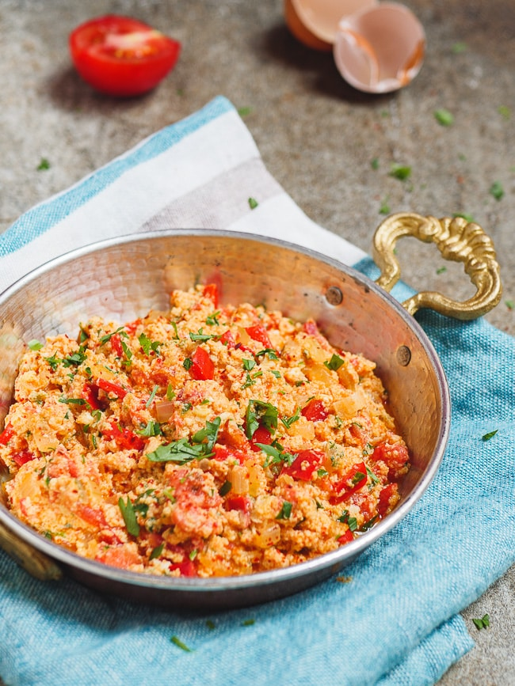

Menemen

Back
Description
A Turkish cousin to breakfast classic shakshouka, menemen also features a tomato sauce with peppers. But instead of poaching, the eggs are scrambled into the sauce with plenty of cheese, creating the perfect gooey accompaniment to some crisp bread and of course, Turkish coffee.
This dish is fine with bell pepper, but to get more heat and a better flavor, I recommend adding at least a jalapeno, if not a couple serrano peppers. Live a little.
Ingredients (serves 1)
- 4 eggs
- 3-4 small roma tomatoes, diced
- Chilis to taste (I prefer 3-4 serranos and some green bell)
- 1 medium onion, diced
- 2 cloves minced garlic
- 1 handful melty cheese of your choice
- Crusty bread to serve
- Few spoons olive oil for cooking
Steps
- Heat olive oil in small frypan
- Add peppers and onions, stirring until translucent
- Add garlic and stir until fragrant
- Add tomatoes and cook until they lose their shape
- Add eggs and cheese, mixing until desired consistency is achieved
- Serve in frying pan with crusty bread and Turkish coffee or tea
Trivia
Famous rapper 50 Cent loves menemen so much he immortalized it in one of his songs. Check it out:
50 Cent - Menemen